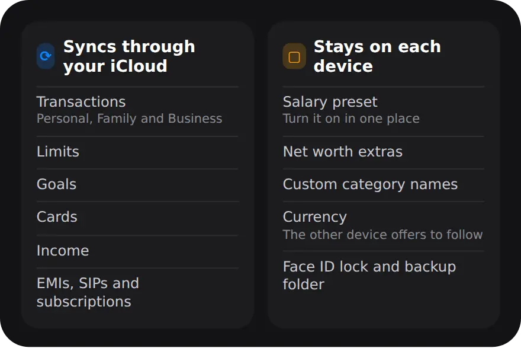

Why track expenses on both iPad and iPhone?
Because each is better at a different job: the iPhone for logging a payment on the spot, the iPad for reviewing the month on a bigger screen.
Most payments happen with your phone in your hand, so that is where entries go in: a UPI payment, a cash purchase, a screenshot of your payment history. The iPad suits the slower work, such as going through the month's categories, checking limits or importing a bank statement. It also helps when a family shares an iPad at home. All of that only works if both devices show the same ledger.
Can you sync an expense tracker without giving a company your data?
Yes. MoneyOS syncs through the private database in your own iCloud account, so your ledger moves between your devices without passing through any server of ours.
Many apps sync by sending your data to their own servers, which is why they ask you to create an account. MoneyOS has no account and no server. When you turn on iCloud sync, your ledger goes to your private iCloud, which is tied to your Apple Account and governed by Apple's iCloud terms. We cannot see it, and the App Privacy label says Data Not Collected. Read more in the privacy policy.
How do I sync MoneyOS between iPad and iPhone?
Turn on iCloud sync in Settings on both devices, signed in to the same Apple Account, then reopen the app. Five steps:
- Use the same Apple Account. Sign in to iCloud with the same Apple Account on your iPhone and your iPad, and install MoneyOS on both.
- Turn on iCloud sync. On each device, open Settings in MoneyOS and turn on iCloud sync. It is off until you do.
- Reopen the app. Sync starts the next time MoneyOS opens, so close it and open it again. Until then the status reads Turns on next launch.
- Watch the status. The status shows Uploading your ledger while your entries go up, then Synced with the time of the last sync.
- Set up per-device settings. Your salary preset, Net worth extras and custom category names stay on each device. Set them where you need them.
If you already logged entries on both devices, each device uploads what it has and the two are combined into one ledger. If the same payment was logged on both, look for the amber warning sign that marks a likely duplicate.
If a device is not signed in to iCloud, MoneyOS says it is not syncing and keeps the ledger on that device. Sign in from the Settings app, then reopen MoneyOS. If a sync attempt fails, the status says so, rather than failing quietly.
What syncs, and what stays on each device?
Your ledger syncs: transactions, limits, goals, cards, income and commitments. A few personal settings stay on each device.

Two of these are worth a note. Turn on Recurring salary on one device only, so that one device adds your salary each month. And if you change currency on one device, the other notices when the synced entries arrive in the new currency and offers to switch too. More on currencies in MoneyOS.
Is sync the same as a backup?
No. Sync keeps your devices the same, so a mistake on one device reaches the other. A backup is a copy you can go back to.
If you delete an entry on your iPad, it disappears from your iPhone too. That is what sync is for, but it is not protection against losing data. Keep MoneyOS's daily backups, and pick a backup folder in Files or iCloud Drive so a copy survives even if the app is deleted. Here is how to back up your expense data.
Frequently asked questions
Can I use MoneyOS on iPad and iPhone?
Yes. MoneyOS runs on both iPhone and iPad. Turn on iCloud sync on each device, signed in to the same Apple Account, and both show the same ledger.
Can the MoneyOS team see my synced data?
No. Your ledger syncs through the private database in your own iCloud account. There is no MoneyOS account or server, and the App Privacy label says Data Not Collected.
Is iCloud sync on by default?
No. iCloud sync is off until you turn it on in Settings, and it starts the next time the app opens. Until then everything stays on the device.
What syncs between my devices?
Transactions in every ledger, limits, goals, cards, income, and commitments such as EMIs, SIPs and subscriptions. A few settings, like your salary preset and currency, stay on each device.
Is sync the same as a backup?
No. Sync keeps devices the same, so deleting an entry on one deletes it on the other. Keep daily backups on, and pick a backup folder in Files so a copy lives outside the app.
Is MoneyOS free?
Yes. The whole app is free, with no subscription, no ads and no in-app purchases.